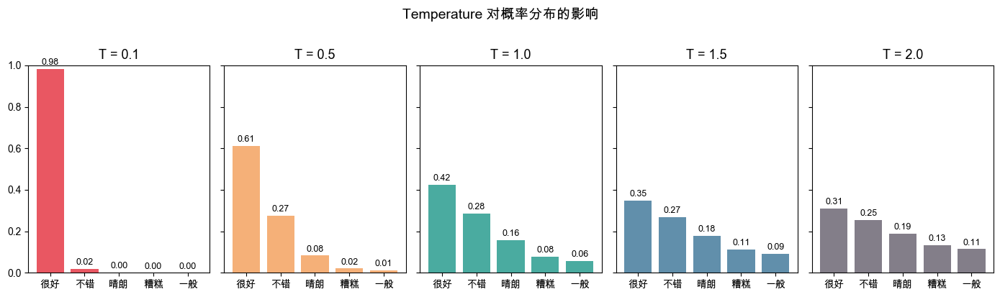

04 · Sampling Parameters#
同一个 prompt，发两次给模型，结果往往不一样——这不是 bug，是设计如此。
模型输出的本质是一个概率分布，每次生成都是在这个分布上采样。
temperature、top_p、top_k 这三个参数控制的就是怎么从这个分布里采样。
理解它们，你就能精确控制模型输出的「随机性」与「创造力」。
1. 模型输出的本质：概率分布#
每次生成 token 时，模型并不直接输出一个词， 而是输出词表中每个 token 的概率，然后按概率采样。
输入: "今天天气"
模型内部输出（logits → softmax）:
"很好" → 35%
"不错" → 28%
"晴朗" → 18%
"糟糕" → 8%
其他词 → 11%
────────────────
采样 → 每次结果可能不同
采样参数的作用：改变这个分布的形状，从而控制输出的多样性。
import numpy as np
import matplotlib.pyplot as plt
import matplotlib
matplotlib.rcParams["font.family"] = ["Arial Unicode MS", "sans-serif"]
# 模拟一个简化的 logits 分布（5 个候选 token）
tokens = ["很好", "不错", "晴朗", "糟糕", "一般"]
logits = np.array([2.5, 2.1, 1.5, 0.8, 0.5])
def softmax(x):
e = np.exp(x - x.max())
return e / e.sum()
probs = softmax(logits)
print("原始概率分布：")
for t, p in zip(tokens, probs):
bar = "█" * int(p * 40)
print(f" {t} {p:.3f} {bar}")
原始概率分布：
很好 0.424 ████████████████
不错 0.284 ███████████
晴朗 0.156 ██████
糟糕 0.078 ███
一般 0.057 ██
2. Temperature#
Temperature 在 softmax 之前对 logits 做缩放：
$$P(token_i) = \frac{e^{logit_i / T}}{\sum_j e^{logit_j / T}}$$
T → 0：分布极度尖锐，概率最高的 token 几乎必然被选中（贪心）
T = 1：原始分布，不做任何改变
T > 1：分布变平，低概率 token 也有机会被选中（更随机）
temperatures = [0.1, 0.5, 1.0, 1.5, 2.0]
fig, axes = plt.subplots(1, len(temperatures), figsize=(14, 4), sharey=True)
colors = ["#E63946", "#F4A261", "#2A9D8F", "#457B9D", "#6D6875"]
for ax, T, color in zip(axes, temperatures, colors):
p = softmax(logits / T)
ax.bar(tokens, p, color=color, alpha=0.85)
ax.set_title(f"T = {T}", fontsize=13)
ax.set_ylim(0, 1)
ax.tick_params(axis="x", labelsize=10)
for i, v in enumerate(p):
ax.text(i, v + 0.02, f"{v:.2f}", ha="center", fontsize=9)
fig.suptitle("Temperature 对概率分布的影响", fontsize=14, y=1.02)
plt.tight_layout()
plt.show()

from utils.llm_client import chat
# 相同 prompt，不同 temperature，看输出变化
prompt = "用一句话描述秋天。"
print(f"Prompt: {prompt}\n")
for T in [0.0, 0.5, 1.0, 1.5]:
# 每个 temperature 跑 2 次，观察稳定性
results = [chat(prompt, temperature=T) for _ in range(2)]
print(f"── Temperature = {T} ──")
for i, r in enumerate(results, 1):
print(f" [{i}] {r.strip()}")
print()
Prompt: 用一句话描述秋天。
── Temperature = 0.0 ──
[1] 秋天是树叶由绿变金、微凉的风里夹着收获与别离气息的季节。
[2] 秋天是金色阳光洒满大地、微凉秋风拂面、落叶与丰收交织出的宁静季节。
── Temperature = 0.5 ──
[1] 秋天像一封写满金黄与微凉的信，悄悄把夏日的喧闹折叠成温柔的静好。
[2] 秋天像位温柔的画家，把树叶染成金黄与火红，带来清冷的风与丰收的气息。
── Temperature = 1.0 ──
[1] 秋天像披着金色披风的画家，把树叶染成黄与红，空气里带着果实的香甜与沁人心脾的凉意。
[2] 秋天是微凉的风、金黄的田野与落叶在地上低语的季节。
── Temperature = 1.5 ──
[1] 秋天像一幅金色的画卷，微凉的风带走暑热，落叶在脚下低语，空气里弥漫着丰收与思念的味道。
[2] 秋天是阳光变得温柔、空气带着凉意与果实香甜、树叶在风中缓缓飘落的季节。
观察：
T=0：两次输出几乎相同（确定性输出，适合代码生成、数学计算）T=1：有变化，但保持合理性T=1.5：更有创意，但可能出现不寻常的表达
3. Top-p（Nucleus Sampling）#
Top-p 不直接操作 logits，而是过滤候选集合：
把所有 token 按概率从高到低排序
从头累加，直到累计概率 ≥ p
只保留这些 token，重新归一化后采样
top_p = 0.9：
"很好" 35% ← 累计 35%
"不错" 28% ← 累计 63%
"晴朗" 18% ← 累计 81%
"糟糕" 8% ← 累计 89%
"一般" 6% ← 累计 95% > 90% ← 截止
────────────────────────────────
只从前 4 个 token 中采样
优点： 候选集合大小随分布动态变化——分布集中时候选少，分布分散时候选多。
def apply_top_p(probs: np.ndarray, p: float) -> np.ndarray:
"""演示 top-p 过滤逻辑（仅用于理解原理）。"""
sorted_idx = np.argsort(probs)[::-1]
sorted_probs = probs[sorted_idx]
cumulative = np.cumsum(sorted_probs)
# 找到累计超过 p 的截止点
cutoff = np.searchsorted(cumulative, p) + 1
# 只保留前 cutoff 个
mask = np.zeros_like(probs)
mask[sorted_idx[:cutoff]] = probs[sorted_idx[:cutoff]]
return mask / mask.sum() # 重新归一化
print(f"{'Top-p':>8} | {'保留 token 数':>14} | 分布")
print("-" * 55)
for p in [0.5, 0.7, 0.9, 0.95, 1.0]:
filtered = apply_top_p(probs, p)
n_kept = (filtered > 0).sum()
kept = [(tokens[i], filtered[i]) for i in range(len(tokens)) if filtered[i] > 0]
kept_str = ", ".join(f"{t}({v:.2f})" for t, v in kept)
print(f"{p:>8} | {n_kept:>14} | {kept_str}")
Top-p | 保留 token 数 | 分布
-------------------------------------------------------
0.5 | 2 | 很好(0.60), 不错(0.40)
0.7 | 2 | 很好(0.60), 不错(0.40)
0.9 | 4 | 很好(0.45), 不错(0.30), 晴朗(0.17), 糟糕(0.08)
0.95 | 5 | 很好(0.42), 不错(0.28), 晴朗(0.16), 糟糕(0.08), 一般(0.06)
1.0 | 5 | 很好(0.42), 不错(0.28), 晴朗(0.16), 糟糕(0.08), 一般(0.06)
# 实际 API：对比不同 top_p 的创意程度
prompt = "给一家咖啡店起一个有创意的名字，只给名字，不要解释。"
print(f"Prompt: {prompt}\n")
for p in [0.3, 0.7, 0.95]:
results = [chat(prompt, temperature=1.0, top_p=p) for _ in range(3)]
print(f"── top_p = {p} ──")
for r in results:
print(f" {r.strip()}")
print()
Prompt: 给一家咖啡店起一个有创意的名字，只给名字，不要解释。
── top_p = 0.3 ──
豆蔻时光
拾光咖啡馆
午后拾光咖啡
── top_p = 0.7 ──
夜光豆语
豆间诗社
豆间光年
── top_p = 0.95 ──
豆间密语
豆间物语
豆间诗社
4. Top-k#
Top-k 更简单粗暴：固定只保留概率最高的 k 个 token，不管概率分布形状如何。
top_k = 3：
保留："很好"(35%)、"不错"(28%)、"晴朗"(18%)
丢弃："糟糕"(8%)、"一般"(6%)
缺点： k 是固定的，无法适应分布的集中程度。
分布集中时（如 k=50 里 top-1 已有 90% 概率）：仍然采样 50 个，引入不必要的噪声
分布分散时（如 top-50 才覆盖 60%）：截断太早，错过合理候选
def apply_top_k(probs: np.ndarray, k: int) -> np.ndarray:
"""演示 top-k 过滤逻辑。"""
top_k_idx = np.argsort(probs)[::-1][:k]
mask = np.zeros_like(probs)
mask[top_k_idx] = probs[top_k_idx]
return mask / mask.sum()
print(f"{'Top-k':>8} | 保留的 token")
print("-" * 50)
for k in [1, 2, 3, 4, 5]:
filtered = apply_top_k(probs, k)
kept = [(tokens[i], filtered[i]) for i in range(len(tokens)) if filtered[i] > 0]
kept_str = ", ".join(f"{t}({v:.2f})" for t, v in kept)
print(f"{k:>8} | {kept_str}")
Top-k | 保留的 token
--------------------------------------------------
1 | 很好(1.00)
2 | 很好(0.60), 不错(0.40)
3 | 很好(0.49), 不错(0.33), 晴朗(0.18)
4 | 很好(0.45), 不错(0.30), 晴朗(0.17), 糟糕(0.08)
5 | 很好(0.42), 不错(0.28), 晴朗(0.16), 糟糕(0.08), 一般(0.06)
5. 三者的关系与实战建议#
通常同时设置 temperature + top_p，两个条件都满足才采样：先用 top_p 过滤候选，再用 temperature 控制分布形状。
# 不同任务的推荐参数组合
presets = [
{
"场景": "代码生成 / 数学计算",
"temperature": 0.0,
"top_p": 1.0,
"说明": "确定性输出，每次结果一致",
"prompt": "写一个 Python 函数计算斐波那契数列第 n 项。",
},
{
"场景": "信息提取 / 问答",
"temperature": 0.3,
"top_p": 0.9,
"说明": "低随机性，保证准确，允许少量表达变化",
"prompt": "Python 是哪年发布的？只回答年份。",
},
{
"场景": "通用对话",
"temperature": 0.7,
"top_p": 0.95,
"说明": "平衡创意与连贯性，API 默认值附近",
"prompt": "给我讲一个关于程序员的笑话。",
},
{
"场景": "创意写作 / 头脑风暴",
"temperature": 1.2,
"top_p": 0.95,
"说明": "高随机性，鼓励新颖表达",
"prompt": "用一句诗描述人工智能。",
},
]
for preset in presets:
print(f"\n{'='*55}")
print(f"场景: {preset['场景']}")
print(f"参数: temperature={preset['temperature']}, top_p={preset['top_p']}")
print(f"说明: {preset['说明']}")
print(f"Prompt: {preset['prompt']}")
response = chat(
preset["prompt"],
temperature=preset["temperature"],
top_p=preset["top_p"],
)
print(f"Output: {response.strip()}")
=======================================================
场景: 代码生成 / 数学计算
参数: temperature=0.0, top_p=1.0
说明: 确定性输出，每次结果一致
Prompt: 写一个 Python 函数计算斐波那契数列第 n 项。
Output: 下面给出几种常见的 Python 实现方式（默认采用 0 为第 0 项，1 为第 1 项，即 F(0)=0, F(1)=1）。函数都对非负整数 n 有效，若需 1 为第 1 项请把调用时的参数减 1 或调整说明。
1) 迭代（简单、推荐，一般用途）
```python
def fib_iter(n):
if not isinstance(n, int) or n < 0:
raise ValueError("n 必须是非负整数")
a, b = 0, 1
for _ in range(n):
a, b = b, a + b
return a
```
复杂度：时间 O(n)，空间 O(1)。
2) 朴素递归（直观，但效率极低，仅用于教学）
```python
def fib_rec(n):
if not isinstance(n, int) or n < 0:
raise ValueError("n 必须是非负整数")
if n < 2:
return n
return fib_rec(n-1) + fib_rec(n-2)
```
复杂度：时间约 O(2^n)，不推荐用于较大 n。
3) 快速幂/倍增法（用于大 n，时间 O(log n)）
```python
def fib_fast(n):
if not isinstance(n, int) or n < 0:
raise ValueError("n 必须是非负整数")
# 返回 (F(n), F(n+1))
def _fib_pair(k):
if k == 0:
return (0, 1)
a, b = _fib_pair(k >> 1)
c = a * (2 * b - a) # F(2m) = F(m) * (2*F(m+1) - F(m))
d = a * a + b * b # F(2m+1) = F(m)^2 + F(m+1)^2
if k & 1:
return (d, c + d)
else:
return (c, d)
return _fib_pair(n)[0]
```
复杂度：时间 O(log n)，适合非常大的 n（Python 的大整数支持任意精度）。
使用示例：
```python
print(fib_iter(10)) # 输出 55
print(fib_fast(100)) # 输出第 100 项
```
需要我只给其中一种实现，还是按 1- 或 0- 索引来定制？
=======================================================
场景: 信息提取 / 问答
参数: temperature=0.3, top_p=0.9
说明: 低随机性，保证准确，允许少量表达变化
Prompt: Python 是哪年发布的？只回答年份。
Output: 1991
=======================================================
场景: 通用对话
参数: temperature=0.7, top_p=0.95
说明: 平衡创意与连贯性，API 默认值附近
Prompt: 给我讲一个关于程序员的笑话。
Output: 有两种程序员：懂二进制的，和不懂二进制的。
=======================================================
场景: 创意写作 / 头脑风暴
参数: temperature=1.2, top_p=0.95
说明: 高随机性，鼓励新颖表达
Prompt: 用一句诗描述人工智能。
Output: 冷光织梦，机器亦窥见人心。
# 极端参数演示：temperature=1.5 时输出会有多混乱
# 注意：temperature=2.0 有时会让模型生成纯空白 token，这里用 1.5 已足够极端
print("Temperature=1.5（极高随机性）的输出：")
for i in range(3):
r = chat("今天天气很", temperature=1.5)
out = r.strip()
print(f" [{i+1}] {out if out else repr(r)}") # 空时显示原始内容帮助调试
Temperature=1.5（极高随机性）的输出：
[1] 你好，你好像没把句子写完——"今天天气很..." 想说什么呢？
如果你需要提示，下面是几种常见续写和相应建议：
- 很好/晴朗：适合出门，别忘了防晒和带水。
- 很热：多喝水、穿薄透气的衣服，尽量避开正午烈日。
- 很冷：多穿几层，注意保暖和脚部防滑。
- 很潮/下雨：带伞或雨具，穿防水鞋，出行注意路滑和交通延误。
- 很闷/湿热：开空调或除湿机，注意防暑。
- 有雾/沙尘：戴口罩，减少户外活动，开车注意能见度。
要不要我帮你查一下你所在城市的实时天气和预报？告诉我城市名（或允许定位）即可。
[2] 你刚发了“今天天气很”还没写完。你是想让我帮你补全句子，还是要我查某个城市的实时天气？
如果要补全，这里是一些常见说法和对应建议：
- 今天天气很暖和/晴朗 —— 适合外出，带太阳镜、防晒。
- 今天天气很炎热 —— 注意防暑，多喝水、穿薄透气衣物。
- 今天天气很凉爽/清爽 —— 可以穿薄外套或长袖。
- 今天天气很阴沉/多云 —— 可能会阴天，外出可备轻便外套。
- 今天天气很湿冷/下雨 —— 带伞和防水外套，注意保暖。
如果要查天气，请告诉我城市或允许我使用你的位置，我马上为你查当天的预报和穿衣建议。
[3] 你刚写到“今天天气很”，好像没写完。你是想说：
- 今天天气很好 / 晴朗
- 今天天气很热
- 今天天气很冷
- 今天天气很潮 / 闷
- 今天天气很阴 / 要下雨
想让我给出对应的建议吗？例如：
- 很热：多喝水、戴帽子/太阳镜、涂防晒、避开中午高温；室内空调26℃左右。
- 很冷：多穿保暖、分层着装、戴帽手套，室内注意通风加湿。
- 有雨：带伞/雨具、防水鞋，出行注意路滑。
- 闷/潮湿：开除湿、通风，注意防霉。
- 晴好：适合户外活动，注意防晒和空气质量。
要我查一下你所在城市的实时天气预报和穿衣/出行建议吗？告诉我城市名或开启位置即可。
小结#
参数 |
作用 |
推荐范围 |
|---|---|---|
|
缩放 logits，控制分布的尖锐程度 |
0（确定）→ 1.5（创意） |
|
动态过滤候选集，保留累计概率前 p 的 token |
0.9–0.95（通用） |
|
固定保留概率最高的 k 个 token |
通常不单独使用 |
经验法则：
精确任务（代码、计算、提取）→
temperature=0通用对话 →
temperature=0.7, top_p=0.95创意任务 →
temperature=1.0–1.3, top_p=0.95temperature和top_p一起调，但不要同时调 top_k
Module 1 · 基础概念 完结 🎉
下一模块 → Module 2: Prompting：Zero-shot、Few-shot、Chain-of-Thought